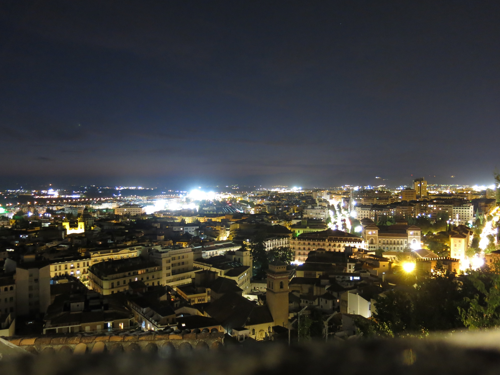

Kierunek: Hiszpania
Miejscowość: Granada
Granada to pod kątem turystyki jedno z najpopularniejszych miast w regionie Andaluzji. Rozciąga się wzdłuż rzeki Genil, tuż u stóp pasma górskiego Sierra Nevada. Ta malowniczo położona miejscowość słynie przede wszystkim z pięknej architektury i znakomicie zachowanych zabytków, które zapierają dech w piersiach. Co można powiedzieć o najbardziej znanym zabytku Granady i jednym z najpopularniejszych w całej Hiszpanii? Z pewnością to, że bez względu na wszystko trzeba go odwiedzić! Alhambra to najpiękniejszy kompleks pałacowo-zamkowy z czasów dominacji muzułmańskiej, jaki kiedykolwiek powstał w Europie. Na zwiedzenie go można poświęcić kilka godzin lub cały dzień. Druga opcja pozwala w pełni zagłębić się bogactwo architektoniczne tego miejsca, niezwykłą ornamentykę oraz pełne bujnej roślinności ogrody Generalife.